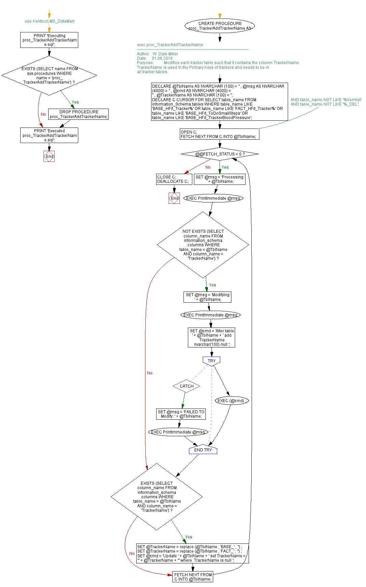

<a href="proc_TrackerAddTrackerName2.png"></a>
-- use KenticoCMS_DataMart GO PRINT 'Executing proc_TrackerAddTrackerName.sql'; GO IF EXISTS (SELECT name FROM sys.procedures WHERE name = 'proc_TrackerAddTrackerName') BEGIN DROP PROCEDURE proc_TrackerAddTrackerName; END; GO -- exec proc_TrackerAddTrackerName CREATE PROCEDURE proc_TrackerAddTrackerName AS BEGIN /*----------------------------------------------------------------------------------- Author: W. Dale Miller Date: 01.08.2016 Purpose: Modifies each tracker table such that it contains the column TrackerName. TrackerName is used in the Primary Keys of trackers and needs to be in all tracker tables. */ DECLARE @TblName AS NVARCHAR (100) = '' , @msg AS NVARCHAR (4000) = '' , @cmd AS NVARCHAR (4000) = '' , @TrackerName AS NVARCHAR (100) = ''; DECLARE C CURSOR FOR SELECT table_name FROM information_Schema.tables WHERE table_name LIKE 'BASE_HFit_Tracker%' OR table_name LIKE 'FACT_HFit_Tracker%' OR table_name LIKE 'BASE_HFit_ToDoSmallSteps' OR table_name LIKE 'BASE_HFit_TrackerBloodPressure'; --AND table_name NOT LIKE '%VerHist' --AND table_name NOT LIKE '%_DEL'; OPEN C; FETCH NEXT FROM C INTO @TblName; WHILE @@FETCH_STATUS = 0 BEGIN SET @msg = 'Processing: ' + @TblName; EXEC PrintImmediate @msg; IF NOT EXISTS (SELECT column_name FROM information_schema.columns WHERE table_name = @TblName AND column_name = 'TrackerName') BEGIN SET @msg = 'Modifying: ' + @TblName; EXEC PrintImmediate @msg; SET @cmd = 'Alter table ' + @TblName + ' add TrackerName nvarchar(100) null '; BEGIN TRY EXEC (@cmd) ; END TRY BEGIN CATCH SET @msg = 'FAILED TO Modify: ' + @TblName; EXEC PrintImmediate @msg; END CATCH; END; IF EXISTS (SELECT column_name FROM information_schema.columns WHERE table_name = @TblName AND column_name = 'TrackerName') BEGIN SET @TrackerName = replace (@TblName , 'BASE_' , '') ; SET @TrackerName = replace (@TblName , 'FACT_' , '') ; SET @cmd = 'Update ' + @TblName + ' set TrackerName = ''' + @TrackerName + ''' where TrackerName is null '; END; FETCH NEXT FROM C INTO @TblName; END; CLOSE C; DEALLOCATE C; END; GO PRINT 'Executed proc_TrackerAddTrackerName.sql'; GO
Hide code
Visustin flow chart for T-SQL